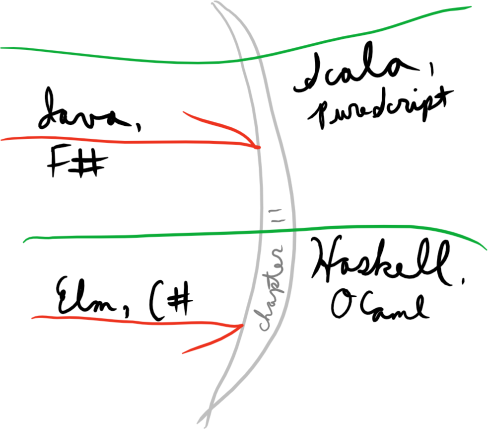

Stephen Compall
Higher-kinded types: the difference between giving up, and moving forward
technicalAs its opening sentence reminds the reader—a point often missed by many reviewers—the book Functional Programming in Scala is not a book about Scala. This (wise) choice occasionally manifests in peculiar ways.
For example, you can go quite far into the book implementing its exercises in languages with simpler type systems. Chapters 1–8 and 10 port quite readily to Java 8 and C#. So Functional Programming in Scala can be a very fine resource for learning some typed functional programming, even if such languages are all you have to work with. Within these chapters, you can remain blissfully unaware of the limitations imposed on you by these languages’ type systems.
However, there is a point of inflection in the book at chapter 11. You can pass through with a language such as OCaml, Scala, Haskell, PureScript, or one of a few others. However, users of Java, C#, F#, Elm, and many others may proceed no further, and must turn back here.

Here is where abstracting over type constructors, or “higher-kinded types”, comes into play. At this point in the book, you can give up, or proceed with a sufficiently powerful language. Let’s see how this happens.
The bread and butter of everyday functional programming, the “patterns” if you like, is the implementation of standard functional combinators for your datatypes, and more importantly the comfortable, confident use of these combinators in your program.
For example, confidence with bind, also known as >>= or flatMap,
is very important. The best way to acquire this comfort is to
reimplement it a bunch of times, so Functional Programming in Scala
has you do just that.
def flatMap[B](f: A => List[B]): List[B] // in List[A]
def flatMap[B](f: A => Option[B]): Option[B] // in Option[A]
def flatMap[B](f: A => Either[E, B]): Either[E, B] // in Either[E, A]
def flatMap[B](f: A => State[S, B]): State[S, B] // in State[S, A]flatMaps are the sameThe similarity between these functions’ types is the most obvious
surfacing of their ‘sameness’. (Unless you wish to count their names,
which I do not.) That sameness is congruent: when you write functions
using flatMap, in any of the varieties above, these functions
inherit a sort of sameness from the underlying flatMap combinator.
For example, supposing we have map and flatMap for a type, we can
‘tuple’ the values within.
def tuple[A, B](as: List[A], bs: List[B]): List[(A, B)] =
as.flatMap{a =>
bs.map((a, _))}
def tuple[A, B](as: Option[A], bs: Option[B]): Option[(A, B)] =
as.flatMap{a =>
bs.map((a, _))}
def tuple[E, A, B](as: Either[E, A], bs: Either[E, B]): Either[E, (A, B)] =
as.flatMap{a =>
bs.map((a, _))}
def tuple[S, A, B](as: State[S, A], bs: State[S, B]): State[S, (A, B)] =
as.flatMap{a =>
bs.map((a, _))}Functional Programming in Scala contains several such functions,
such as sequence. These are each implemented for several types, each
time with potentially the same code, if you remember to look back and
try copying and pasting a previous solution.
In programming, when we encounter such great sameness—not merely similar code, but identical code—we would like the opportunity to parameterize: extract the parts that are different to arguments, and recycle the common code for all situations.
In tuple’s case, what is different are
flatMap and map implementations, andList, Option, State[S, ...], what
have you.We have a way to pass in implementations; that’s just higher-order functions, or ‘functions as arguments’. For the type constructor, we need ‘type-level functions as arguments’.
def tuplef[F[_], A, B](fa: F[A], fb: F[B]): F[(A, B)] = ???We’ve handled ‘type constructor as argument’, and will add the
flatMap and map implementations in a moment. First, let’s learn
how to read this.
Confronted with a type like this, it’s helpful to sit back and muse on the nature of a function for a moment.
Functions are given meaning by substitution of their arguments.
def double(x: Int) = x + xdouble remains “an abstraction” until we substitute for x; in
other words, pass an argument.
double(2) double(5)
2 + 2 5 + 5
4 10But this isn’t enough to tell us what double is; all we see from
these tests is that double sometimes returns 4, sometimes 10,
sometimes maybe other things. We must imagine what double does in
common for all possible arguments.
Likewise, we give meaning to type-parameterized definitions like
tuplef by substitution. The parameter declaration F[_] means that
F may not be a simple type, like Int or String, but instead a
one-argument type constructor, like List or Option. Performing
these substitutions for tuplef, we get
// original, as above
def tuplef[F[_], A, B](fa: F[A], fb: F[B]): F[(A, B)]
// F = List
def tupleList[A, B](fa: List[A], fb: List[B]): List[(A, B)]
// F = Option
def tupleOpt[A, B](fa: Option[A], fb: Option[B]): Option[(A, B)]More complicated and powerful cases are available with other kinds of
type constructors, such as by partially applying. That’s how we can
fit State, Either, and other such types with two or more
parameters into the F parameter.
// F = Either[E, ...]
def tupleEither[E, A, B](fa: Either[E, A], fb: Either[E, B])
: Either[E, (A, B)]
// F = State[S, ...]
def tupleState[S, A, B](fa: State[S, A], fb: State[S, B])
: State[S, (A, B)]Just as with double, though this isn’t the whole story of tuplef,
its true meaning arises from the common way in which it treats all
possible F arguments. That is where higher kinds start to get
interesting.
The type of tuplef expresses precisely our intent—the idea of
“multiplying” two Fs, tupling the values within—but cannot be
implemented as written. That’s because we don’t have functions that
operate on F-constructed values, like fa: F[A] and fb: F[B]. As
with any value of an ordinary type parameter, these are opaque.
In Scala, there are a few ways to pass in the necessary functions. One
option is to implement a trait or abstract class that itself uses
a higher-kinded type parameter or abstract type constructor. Here are
a couple possibilities.
trait Bindable[F[_], +A] {
def map[B](f: A => B): F[B]
def flatMap[B](f: A => F[B]): F[B]
}
trait BindableTM[+A] {
type F[X]
def map[B](f: A => B): F[B]
def flatMap[B](f: A => F[B]): F[B]
}Note that we must use higher-kinded trait type signatures to support
our higher-kinded method types; otherwise, we can’t write the return
types for map and flatMap.
trait BindableBad[F] {
def map[B](f: A => B): F ???
// where is the B supposed to go?Now we make every type we’d like to support either inherit from or
implicitly convert to Bindable, such as List[+A] extends
Bindable[List, A], and write tuplef as follows.
def tupleBindable[F[_], A, B](fa: Bindable[F, A], fb: Bindable[F, B])
: F[(A, B)] =
fa.flatMap{a =>
fb.map((a, _))}There are two major problems with Bindable’s representation of map
and flatMap, ensuring its wild unpopularity in the Scala functional
community, though it still appears in some places, such as
in Ermine.
F is declared in
the method type parameters above.Bindable is
required to have the F parameter infer correctly, and even how
many calls to Bindable methods are performed. For example, we’d
have to declare the F parameter as F[X] <: Bindable[F, X] if we
did one more trailing map call. But then we wouldn’t support
implicit conversion cases anymore, so we’d have to do something
else, too.As a result of all this magic, generic functions over higher kinds
with OO-style operations tend to be ugly; note how much tuplef
looked like the List-specific type, and how little tupleBindable
looks like either of them.
But we still really, really want to be able to write this kind of generic function. Luckily, we have a Wadler-made alternative.
To constrain F to types with the flatMap and map we need, we use
typeclasses instead. For tuplef, that means we leave F abstract,
and leave the types of fa and fb as well as the return type
unchanged, but add an implicit argument, the “typeclass instance”,
which is a first-class representation of the map and flatMap
operations.
trait Bind[F[_]] {
// note the new ↓ fa argument
def map[A, B](fa: F[A])(f: A => B): F[B]
def flatMap[A, B](fa: F[A])(f: A => F[B]): F[B]
}Then we define instances for the types we’d like to have this on:
Bind[List], Bind[Option], and so on, as seen in chapter 11 of
Functional Programming in Scala.
Now we just add the argument to tuplef.
def tupleTC[F[_], A, B](fa: F[A], fb: F[B])
(implicit F: Bind[F]): F[(A, B)] =
F.flatMap(fa){a =>
F.map(fb)((a, _))}We typically mirror the typeclass operations back to methods with an
implicit conversion—unlike with Bindable, this has no effect on
exposed APIs, so is benign. Then, we can remove the implicit F
argument, replacing it by writing F[_]: Bind in the type argument
list, and write the method body as it has been written before, with
flatMap and map methods.
There’s another major reason to prefer typeclasses, but let’s get back to Functional Programming in Scala.
I’ve just described many of the practical mechanics of writing useful functions that abstract over type constructors, but all this is moot if you cannot abstract over type constructors. The fact that Java provides no such capability is not an indicator that they have sufficient abstractions to replace this missing feature: it is simply an abstraction that they do not provide you.
Oh, you would like to factor this common code? Sorry, you are stuck. You will have to switch languages if you wish to proceed.
map functions are obvious candidates for essential parts of a usable
library for functional programming. This is the first-order
abstraction—it eliminates the concrete loops, recursive functions,
or State lambda specifications, you would need to write otherwise.
When we note a commonality in patterns and define an abstraction over that commonality, we move “one order up”. When we stopped simply defining functions, and started taking functions as arguments, we moved from the first order to the second order.
It is not enough for a modern general-purpose functional library in
Scala to simply have a bunch of map functions. It must also provide
the second-order feature: the ability to abstract over map
functions, as well as many, many other functions numerous type
constructors have in common. Let’s not give up; let’s move forward.
This article was tested with Scala 2.11.7 and
fpinscala 5b0115a answers,
with the addition of the method variants of List#map and
List#flatMap.
Stephen Compall